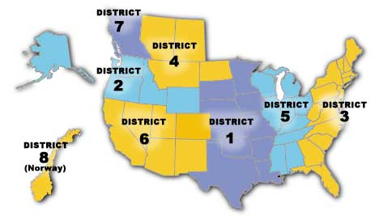

Sons of Norway District 7 includes 15 active Lodges within the Province of British Columbia, Canada.
Sons of Norway is the largest Norwegian organization outside of Norway with more than 40,000 members in over 400 lodges in the United States, Canada, and Norway.
Sons of Norway and its members are dedicated to preserve and promote the Norwegian heritage, culture and tradition.
Today, as for over 100 years, the International Headquarters
www.sofn.com works to meet the cultural, heritage, and financial needs of our members.
